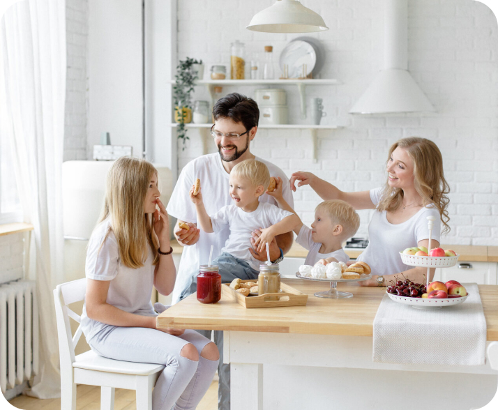

<section class="about container">
  <div class="about__post-wrapper container-offset">
    <div class="about__post about-post about-post-shop">
      <h2 class="about-post__header caption-40">Критерии выбора кухни</h2>
      <p class="about-post__text regular">
        Критерии выбора кухниПредставленная в нашем каталоге мебель отличается
        отменным качеством, долговечностью и продуманным дизайном. Мы изготовим
        для вас на заказ гарнитур по индивидуальным размерам, чтобы он идеально
        вписался в планировку и соответствовал выбранному стилю, и полностью
        оборудуем вашу кухню.
      </p>
      <p class="about-post__text regular">
        Мы предлагаем вам купить кухонную мебель, выполненную как в лаконичном
        современном, так и в роскошном классическом стиле. У нас вы найдете
        гарнитуры для просторных, средних и малогабаритных помещений. Компоновка
        элементов может быть любой: прямой, островной, п-образной, угловой и др.
      </p>
      <p class="about-post__text regular">
        Подробно рассмотреть особенности понравившегося образца можно, кликнув
        по карточке модели. Приблизительно оценить, насколько гарнитур
        соответствует вашим ожиданиям, помогут фото, сделанные в разных
        ракурсах. Узнать же технические характеристики и эксплуатационные
        возможности позволяет подробное описание. Если вы хотите увидеть кухни
        вживую, приглашаем вас посетить наши Кухонные студии в Москве и других
        городах России.
      </p>
      <h2 class="about-post__header caption-40">От чего зависит стоимость</h2>
      <p class="about-post__text regular">
        Для того чтобы узнать точную цену мебели, необходимо составить
        дизайн-проект у наших специалистов. Указанная предварительная стоимость
        рассчитана с учетом базовой компоновки. В нее могут быть включены
        мебель, столешница, фурнитура, карниз, цоколь, сушилка для посуды. По
        вашему желанию мы можем изменить количество, размер или внешний вид
        элементов, что скажется на окончательной сумме.
      </p>
      <p class="about-post__text regular">
        Наша мебель безопасна, функциональна, привлекательна и очень удобна в
        пользовании. На нее дается гарантия от 10 до 20 лет в зависимости от
        типа каркаса. Мы предоставляем нашим клиентам услуги по бесплатному
        замеру, доставке и установке. По всем вопросам звоните нам по
        контактному телефону или пишите в онлайн-чат.
      </p>
    </div>
    <div class="post-img__wrapper shop-img__wrapper">
      
    </div>
  </div>
</section>
